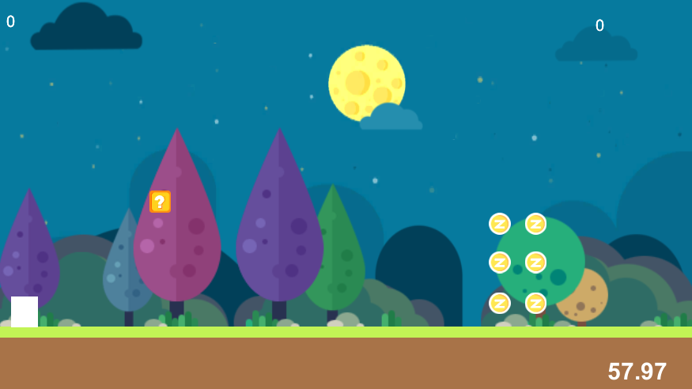

现在我仍然是失业状态，不过正在利用这段时间做许多事情。
首先是可以到我的Bilibili关注我 https://space.bilibili.com/10600
然后是我的独立游戏最近也上线了：https://www.taptap.com/app/66214
最近一方面是每周会在B站撰写一些教程和发一些曲子
以及更新上面的游戏，具体都看看相关主页的说明吧
所以谁会来看你这破网站啊
现在我仍然是失业状态，不过正在利用这段时间做许多事情。
首先是可以到我的Bilibili关注我 https://space.bilibili.com/10600
然后是我的独立游戏最近也上线了：https://www.taptap.com/app/66214
最近一方面是每周会在B站撰写一些教程和发一些曲子
以及更新上面的游戏，具体都看看相关主页的说明吧
我从2010年开始进行独立游戏开发，至今7年过去了，我创作了4个项目。
第一个项目是一款叫变装战机的STG游戏能玩1小时左右，属于D级项目，对于刚开始开发游戏的我来说，目标很小，只希望成功上线一款游戏。
这款游戏到今天的情况则是可能有上万次下载量，但是几乎没人发表评论，就我分析而言主要原因是游戏美术表现不够吸引人，游戏缺乏独特的闪光点，不过作为第一款游戏，能上线我就很满意了，作为一个D级项目，也是我独立游戏生涯的第一个作品。
从第二个作品开始，我就陷入了很长一段时间的开发误区，其实从第二个项目开始，我就希望能开发出一鸣惊人的游戏。
所以第二个项目叫囧之国，是一款横版过关游戏，在那个时代国内还几乎没有做横版独立游戏的团队，不过这个项目开发了快1年的时间就因程序技术的问题放弃了。就目前来看，游戏同样存在缺乏吸引人的美术、缺乏足够的游戏流程、独特的闪光点还不够丰富，当然其中最重要的问题之前也说了是当时的程序技术不足，导致游戏最终无法再继续开发了，所以这个项目就此停止，这个项目停止的时候我就做了总结，决定先不要开发物理引擎这么强的游戏，因为这种游戏非常考验程序的技术，所以强行暂时中止启动下一个项目。
第三个项目总结了过去的问题，开发了一款不需要物理引擎的RPG游戏，勇者要生活，这款游戏虽然美术不是那么完美，但是其游戏风格还是吸引了一部分玩家，独特的闪光点也算是拥有了，但是依然存在缺乏游戏流程的问题，以及还有个问题是，RPG游戏开发涉及到2个难题，一个是这款游戏因为拥有创意的系统，所以需要庞大的数值架构来支持，这一点在开发上有些力不从心。另外则是这个项目进行的时候遇到了很多团队协调问题，比如游戏创作时存在团队成员任性的问题，比如有成员提出“我喜欢A玩法，不按照A玩法做我就不参与了”这样的问题，所以整个项目开发中，游戏的定位不断的在修改，这种问题直接反应出来的原因就是制作人（也就是我自己）不够强势，无法真正意义上的从大局掌握项目的进度，所以最终该项目在第一个大版本发布后因为制作人对团队各成员意见无法统一等问题导致没有后续了。
当然之前这点也有总结，所以第四个项目将创作一款横版像素独立游戏艾尔菲物语，这款游戏在项目初期依然存在制作人的团队协调问题，比如游戏在已经制作到100个场景左右时，因为团队认为场景搭建得不够好，将所有场景废掉重新制作，耽误个大概3个月的制作时间。另外则是对美术动画表现等高要求，以及出资金找外援（因为在勇者项目的时候遇到了成员提出“不喜欢某种玩法就不参与”的问题，所以才改用出资金），但是最终结果是团队并出不起非常高的资金，导致外援的美术效果也不尽理想。团队希望游戏能跟拥有高质量的美术表现但是没有达到的资本。
游戏中期团队制作人终于明白了团队协调的问题，精简了团队规模，以及明白了团队核心技术的问题，在技术不足的时候不能一味的靠资金补足，不过最终游戏的画面表现不尽人意以及玩法缺乏独特亮点的问题导致项目再次被搁置。
经历了4次失败后，我的程序技术倒是进步了不少，现在完全可以做物理引擎类的游戏了，同时期间也到上海去参与了某个比较大的项目，同时学习了半年，虽然上海团队的项目也失败了，不过总结了下发现失败的原因和我们制作艾尔菲失败的原因是完全重合的，也就是团队美术技术不够强，于是团队希望寻找外包解决美术问题，结果就是花费了大量的资金依然没有解决到这个问题。另外就是团队对游戏成品的质量要求过于高，希望能出一款一鸣惊人的游戏，但是团队没有这种级别的技术实力，所以最后游戏质量不尽人意。
通过一些学习和经验的总结后，现在回来重新开发了第二款游戏囧之国，团队回到了最初的2个人的状态，以及将游戏的成品质量定在了C级标准。目前制作的时候就发现了一个问题，时代的变化真的是很快的，再次制作这款游戏的时候，发现很多想法在今天已经略显过时了，曾经还有不少玩家接受火材人、方盒子等游戏，而到今天很多玩法都开始注重游戏画风和人设等要素了。
其实制作的时候就很明白这几个道理，C级质量的游戏受众面会很小，画面和玩法不够吸引人，流程不会太长，而且可能玩法会存在设计问题，甚至在玩家进行游戏的时候会遇到少数恶性BUG，也就是说这是一款绝对的做上市后无法养活团队的项目。
但是经历过几次经验的积累后，依然选择了填上这款定义为C级的项目，这个项目是技术提升的过渡期，因为盲目的追求一鸣惊人已经试过了，最后结果是不仅无法一鸣惊人，还会让项目中途放弃，创业就是一个烧钱或者烧时间烧人生的过程，需要足够的时间积累才可能越来越成功。
所以，祝愿这次填坑的项目，不管质量有多差，只希望能够顺利的做到5小时的流程，能够顺利的以独立游戏的形式贩卖出去，这就是最大的成功了，这样才可以保证在以后能尝试开启B-或者B级的游戏。
最近逐渐的觉得自己的技能到了个瓶颈，所以开始进行下一波的学习了，首先程序方面开始研究图像程序了，主要就是unity3d的shader方面的知识的研究。另外也开始学英语了，由于读书的时候是个学渣没有明白英语的重要性，所以现在先从背4级的词汇开始，最后就是音乐方面我也开始研究交响乐之类的东西了，不过最近都在初级阶段，根据3年起步的原则，大概坚持到2020年会有点小有所成吧，我的目标也是希望在2020年的时候我可以完全突破现在的技术水平进入到更高阶的阶段。
最近我的游戏囧之国即将更新1.2版了，有幸的你可以去appstore搜索下。
在家失业的第一周，开始了小游戏的制作计划，实际上这个项目在2012年就开始了，只是因为工作原因一直断断续续的。
所以，这次制作大部分的工作都是在换皮。
每天早上10点左右工作，工作到晚上6点，看似只有8小时，但是合理利用时间的话，还是很充实的。
所以想了想，加班的意义何在呢，加班反而使项目效率变低。
简单的放一个图片，这次制作挺低调的，连terobi的站点都没有放置游戏的信息，大概准备游戏正式发布的时候一鸣惊人。
现在第一个里程碑计划是7月7日CBT（也就是内测，所以外面是看不到了）

从上海失业了，然后回到了成都，最近先修养一段时间，接下来准备花1-2个月的时间做一款小游戏。
大概会把制作的过程写到这里吧。
凭感觉50分钟能写成什么样子的曲子，我很久没有凭感觉过了
http://music.163.com/#/dj?id=905771050
最近工作很忙，感觉再不练习下音乐我的技能就要丢掉了，所以试了试快速凭感觉写曲子，发现今晚感觉还挺好的，主要今天挺开心的，去南京跟朋友玩了一天，果然开心的时候可以写去好的曲子
最近，工作充斥了几乎所有的生活，原本计划开始创作了，还没有好好开始就被停了下来。
最近尼尔的中文版终于出了，所以暂时性的将创作放一放，好好的沉迷PS4游戏。
果然有游戏玩的时候，还是要好好享受游戏呢。
http://www.bilibili.com/video/av10131703/
5月从上海回到了家乡成都，跟朋友们一起开心的玩了3天，真希望我能够在上海也遇到知心的朋友，这样就可以不那么想回到家乡了。
打算从这个月开始，每个月能够带来至少一个创作，不管是音乐还是游戏还是其他的，虽然不知道是否真能做得到，总之5月为各位带来的作品是个黑历史音乐。
这首歌我记得都是2014年左右的作品了，当时感觉风格有点类似电磁炮那种吧，然后这曲就被我的一个网友发现了，并交给了另外一个社团，然后我本来以为然后就没有然后呢。
突然有一天我看到我的微博有一条新消息，点开一看，是我作曲的曲子，我感到很好奇，然后发现居然是这个，我都快遗忘我曾经有写过这首歌了。
总之百忙之中的我靠吃老本发了一个新作品，感谢无音乐社为我填的坑，或许是缘分，我现在加入的社团叫无名社，名字都差不多。
站点主要涉及2个内容，一个是我的独立项目开发，一个是我的原创曲目开发
好了，开门见山的就把主题讲完了，现在是快餐化时代，什么都要快速
下面一大段废话就是我的心路历程记录了，对于读者来说是毫无意义的
其实，我以前搞过很多博客，不过从来都不是自己架设的，都是其他平台提供的功能，而在其中我非常了解会发生什么，最典型的问题就是博客总会在不久后被抛弃。
这种抛弃的原因不是来自我自己，而是来自平台，毕竟时代发展的太快了，或许今天还热门的博客，明天就被微薄取代。
其实想注册suxsho.me 这个域名很久了，不过每次都是想做的时候就说服自己，因为“搞什么网站啊，维护很累的”
就这样，不经意间，某一天朋友叫我研究一下hexo站点架设，我就入坑了。
关于这个个人站点，我打算用其经营自己的人生，虽然一开始都不知道什么时候会放弃，不过暂且我现在开始经营了。
说到人生，其实也就是我的创作过程，因为我每天都在做各种创作，这里不是一个平台，没有社交功能，不过这样也好，因为社交也有其负面性，就是每次写什么都要考虑会不会影响到别人。
既然都没有人看，那也就作为我自己的开发记录平台了。
确实，互联网发展以来，人们的创作思维发生了大的改变，就比如以前做游戏，都是花很长时间将游戏做好，突然开门见山。
而现在，往往是从立项就开始宣传，然后不断的更新开发中的内容，不断的宣传，并且以不太长的时间上线，再不断的改版。
好了，该写的都写完了，实际上hexo还有个很厉害的地方就是，自带备份，甚至自带版本管理，想一想我都是服气的，确实时代变化很快，要跟上时代才不会被淘汰，感觉我已然是个老年人了。